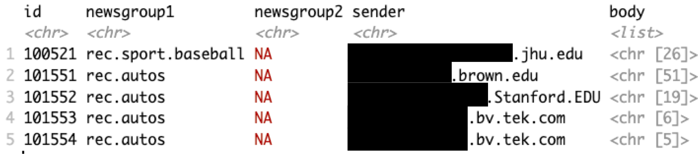

extract_newsgroup(x)
extract_newsgroup(y)Lab 3: wrangling the written word
Due Monday September 21 at 5:00pm
“A [computer keyboard] is to me as a beak is to a hen.” — J. R. R. Tolkien (loosely)
By the end of the lab, you will…
- use regular expressions to build a data frame summarizing thousands of emails for the purposes of text classification in a future lab
Getting started
In the terminal tab, type
cd ~to navigate to your home directory. Nextgit clone git@github.com:sta323-fa26/lab-3-username.gitwhereusernameis replaced with your username.Navigate to your
lab-3folder and open the.Rprojfile.Open the Quarto (
.qmd) file, change the author name to your team name followed by a colon and then the names of the team members.
The data
There are 4911 documents. Each document is an email from one of 5 email listservs (news groups), that, as far as I can tell, were all hosted at Carnegie Mellon University in the early 90s. The original data set (with a total of 20 news groups) can be found here. This data set is a popular choice for experiments in text classification and clustering. Please note the following warning: similar to many modern forums on the internet, the emails in this data set may contain profanity and offensive language. I do not condone, endorse nor promote language, views or content expressed within this data set.
The five document classes (newsgroups) we will consider are as follows:
comp.graphicscomp.sys.mac.hardwarerec.autosrec.sport.baseballsci.space
Exercises
For all exercises, you should respond in the space provided in the template lab-3.qmd. Any task that says “print to the screen”, or “show the output of” or “glimpse the data frame” etc. should be reproduced in your qmd and be visible upon rendering.
1. Examine two emails
Read in the data from the file 37916 with readLines, e.g. x <- readLines("path/to/file/37916"). Also read in file 101554 and assign it to the variable y. Write a function extract_newsgroup() that takes in the text x and returns a character string containing the document class (or classes) using regular expressions. Show the output of the following:
Note: if there are 2 or more classes (document types) then the output show be a vector of length 2 or more. Example: for document y above, the output should be a character vector of length 2.
Why would someone prefer to extract newsgroup information by regular expression instead of grabbing the information from a specific line number in the file?
2. Who sends emails?
Information about who sends the email is usually printed at the top of the file. Examine emails x and y and then write a function extract_sender() that extracts only the email of the sender from a file. For example, the output should be email@duke.edu and not email@duke.edu (name). Show the output of
extract_sender(x)
extract_sender(y)3. Extract the body of the email
Write a function extract_body() that takes in one of the emails, x and (1) identifies the first blank line in the email and (2) extracts everything after the blank line (this is what we will call the “body” of the email). The function should return the entire body of the email as a list. Show the result of
extract_body(x)4. Make a data frame
You will now comb through all 4911 documents and construct a single data frame from these documents for use in a future lab. Our goal is to create a data frame that looks like the following:

More specifically, use your functions from exercise 1, 2, and 3 to construct a data frame called emails_df that contains the following 5 columns:
id: the actual file name that uniquely identifies the email, e.g.37916.newsgroup1: the first newsgroup class (e.g.sci.space)newsgroup2: the second newsgroup class (if available) otherwise, NAsender: email address of the senderbody: list containing all lines that comprise the body of the email
Make it so that newsgroup1 and newsgroup2 only display newsgroups of the following 5 categories:
comp.graphicscomp.sys.mac.hardwarerec.autosrec.sport.baseballsci.space
Note: every single email in this data set has at least one of the category labels above.
Show the output of
glimpse(emails_df)Answer the following questions:
- Are any of the “sender” in your data frame NA? If so, examine one of those emails and explain why.
- What total number of emails have only 1 newsgroup label (of the 5 categories above)?
- What proportion of emails originate from an academic “edu” sender address? Note: some may be “EDU”, e.g. see image above.
Hint
You might revisit list.files from a previous lab and construct a vector of paths you can loop over.
Style guidelines
All assignments in this course must employ proper coding style, as outlined below:
All code should obey the 80 character limit per line (i.e. no code should run off the page when rendering or require scrolling). To enable a vertical line in the RStudio IDE that helps guide this, see the style guidelines from lab 0 or ask a member of the teaching team for help.
All commas should be followed by a space.
All binary operators should be surrounded by space. For example
x + yis appropriate.x+yis not.All pipes
%>%or|>as well as ggplot layers+should be followed by a new line.You should be consistent with stylistic choices, e.g. only use 1 of
=vs<-and%>%vs|>Your name should be at the top (in the YAML) of each document under “author:”
All code chunks should be named (with names that don’t have spaces, e.g.
ex-1,ex-2etc.)File names in your GitHub repo such as
lab-x.qmdmust not be changed and left as provided. Additionally, your repo must pass certain basic checks. The results of these checks are visible on GitHub via the badges at the top of your README and the actions tab. These are meant to give you feedback around the structure and reproducibility of your repository and assignment - they do not assess the correctness of your work. You should consider them a necessary but not sufficient condition when turning in your work - passing all of the checks simply means your have met a minimum standard of reproducibility for the assignment.
Fundamentally, the check is making sure 1) you only have the files you should in your repository, 2) your .qmd renders.
If you have any questions about style, please ask a member of the teaching team.
Submitting your lab
To submit your assignment, simply commit and push your completed lab-x.qmd to your GitHub repo. Your most recent commit 48 hours after the assignment deadline will be graded, and any applicable late penalty will be applied (see the syllabus). For this reason, do not push commits after you are satisfied with your work, or a late penalty will be applied.